David Duffield (then of Halfords) contacts Gerrit Does, the man who brought BMX to Europe for the first time in his homeland of Holland as a training tool for future motorcycle moto-cross riders and founder of Stichting Fietscross Nederland (SFN).
He told him he wanted them (SFN) to come over with riders to compete at a Halfords sponsored BMX event. Mr. Duffield was also planning to visit Holland, probably during an event at the Eindhoven track. He wanted to know more about organizing BMX races, setting up tracks and was interested in the promotional films Gerrit had produced at the time.
28th April 1980
Formalising the sport
The history behind the BMX Association development in the UK centered around a handful of people who were very keen to see it take off and sustain itself as it has done in other countries:
Alan Rushton (Sports-Plus Promotions)
Geoff Wiles (ex-speed cycle rider)
Peter Selby (filmmaker)
Don Smith (ex-motor trials rider)
All agreed to the setting up of one Association for riders, to set the rules, organize the Championships and Promotions, provide a computer listing of individual riders, countrywide classifications by age group and issue of licenses.
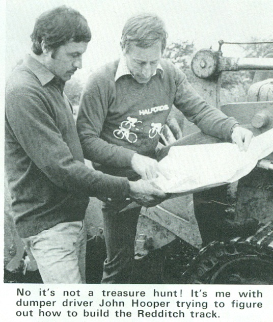
Gerrit Does and John Hooper during the construction of the Redditch pump track
Mr. David Duffield of HALFORDS, who felt very strongly for the future of the sport and in the formation of just one non-profit making body, the "UK Bicycle Moto-cross Association" in short the UK.BMX.A.
Alan Rushton commented to the gathering that the story of the HARROGATE Show was BMX, and that, already exhibitors had received an amazing reaction. UK.BMX.A was not a manufacturers Association but one for the riders. With the help of Sports - Plus they intended to spread technical knowledge as rapid as possible, newsletters free of charge to competitors and associated members, product testing, and the UKBMXA would go to opening of track with bikes from all of the manufacturers to have new-comers ride on them. Also promotional materials for local Councils to convince them of BMX's future was needed and Geoff Wiles would be available to every and anyone (also within the industry) to help. This is how finally the UK.BMX.A saw the day of light, later on that same year.
7th July 1980
Halfords enter the fray
July 7th., Mr. Selby of C.I.P. England, visited with GD. Mr. Peter Selby of CIP (Crown International Productions Ltd.) London - England, visited Holland and witnessed a BMX race. Their company was getting involved in promoting BMX in England in cooperation with Halfords.
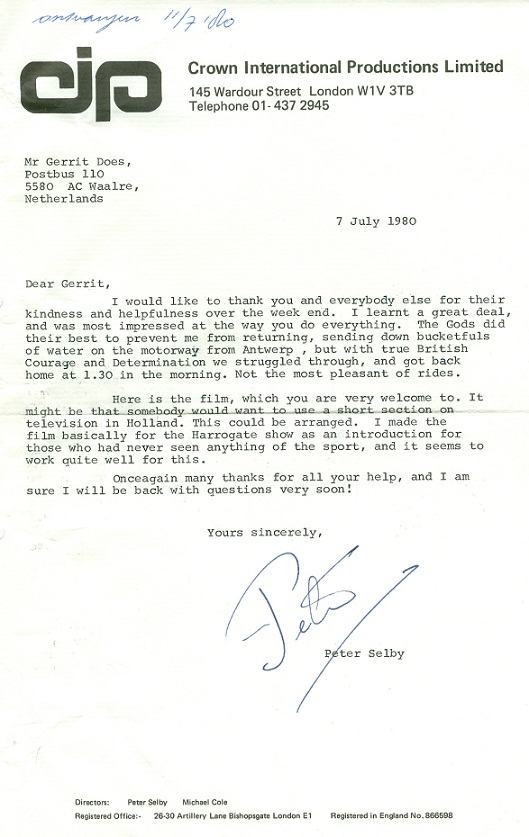
A letter from Peter Selby to Gerrit Does following a trip to Holland to watch a BMX race.
5th August 1980
Back to Holland we go
From England, people came over to Holland to look at this new sport of BMX. Geoff Wiles and Bob Phelps were getting organized in England and we were able to explain to them our situation and organization. I also introduced the English to the JAG BMX WORLD's to be held in the USA December 1980. Geoff Wiles, acting as president of the board of UK.BMX.A. invited the SFN to come over with a team of riders to be present at the official opening of their new track at REDDITCH, later on this year.
30th August 1980
History is written
Footage from the first event in the UK, featuring an interview with the late David Duffield.
Halfords Team BMX—Britain's first (1st.) ever official BMX Event at Redditch. UK.BMX.A.
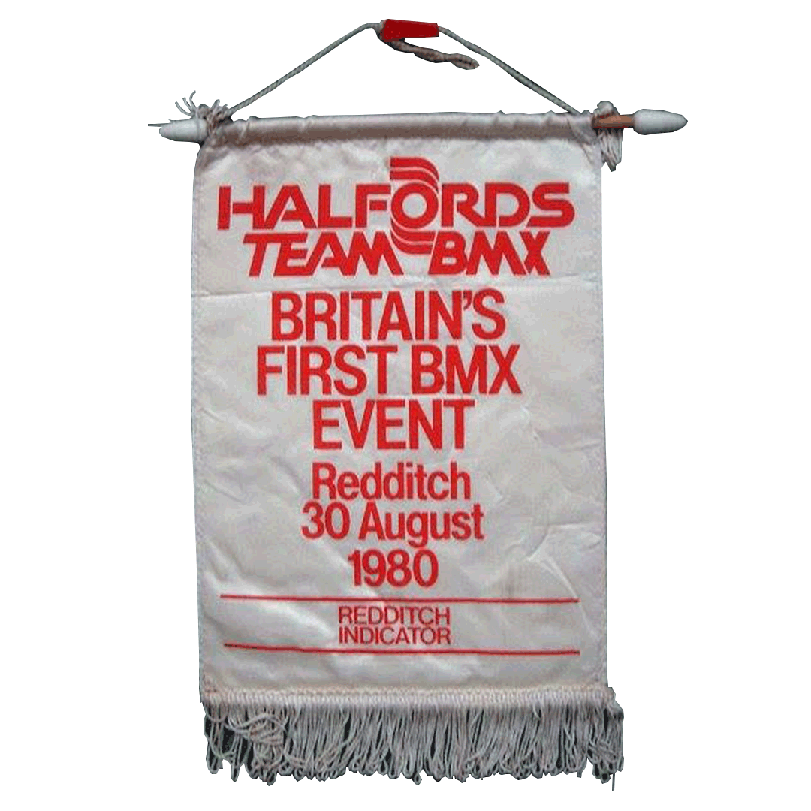
Flag from the first ever UK BMX event in the UK at the Redditch track.
2nd September 1980
Geoff Wiles, ever the gent
Letter from Geoff Wiles (President of UKBMX and National BMX Co-ordinator at Halfords) to Gerrit Does regarding the first event.
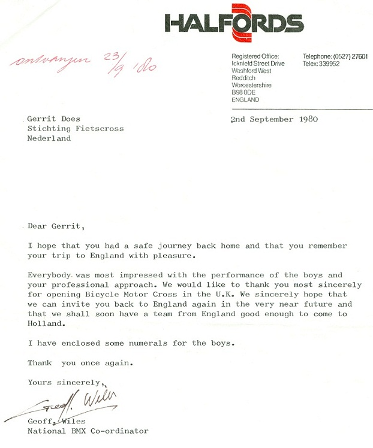
Letter from Geoff Wiles (President of UKBMX and National BMX Co-ordinator at Halfords) to Gerrit Does regarding the first event.
26th September 1980
Chatham build the UK's 2nd track
Letter from Mr. Malcolm Jarvis of AMMACO BMX (Mongoose distributor at the time), announcing the opening of a new track at Chatham in England.
February 1981
BMX hits the press
Britains's only bicycle motocross action magazine did see the light of day in January. Its name: "BMX 0FFICIAL" nr 1 Editorial by : Richard Grant and Nigel Thomas. Photography by: Richard Francis. Consultants : Geoff Wiles and Alan Rushton. Nr. 1 issued in February '81. Later on in October 1981, this magazine did have a circulation of about 25.000 copies.
the first Anglo-American Cup took place at Redditch - England. Several American BMX'ers were present. Also a Dutch team competed.
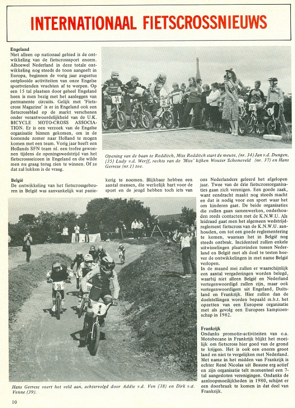
Bicycle Racing News in Holland reported on the historic event in Redditch.
Present from the USA were Greg Esser, Kerensky Bullard and Jamie Burrows. From Holland were present Danny Neys, Bert v.d. Wiel, René de Groot, Leon Walravens, Rob van Someren and Wim v.d. Heiden. This was the second international event organized at Redditch by Halfords.
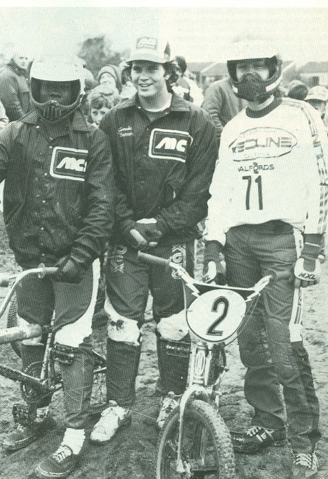
From left to right: Kerensky Bullard & Jamie-Burrows (Both USA), René de Groot (Netherlands)
The final results in the 14 year and Open class:
Jamie Burrows - USA
René de Groot - Holland
Kerensky Bullard - USA
Danny Neys - Holland
English rider
English rider
Wim v.d. Heyden - Holland
Greg Esser - USA (crashed)
11th July 1982
Anglo-American Cup II
Redditch again played host to the second annual Anglo-American Cup, sponsored once more by Halfords. The event was well attended with several US pro's invited and racing at this event.
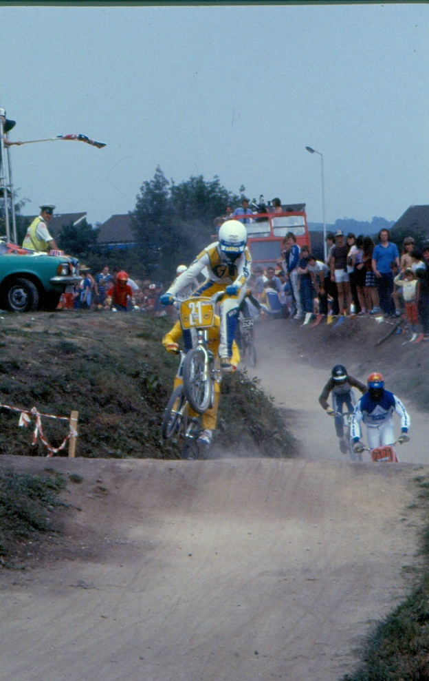
Greg Esser jumping down the back straight
Charlie Litsky was racing as well as announcing that day. This kind of down-hill track was better layed out then a year before and the weather was just fine.
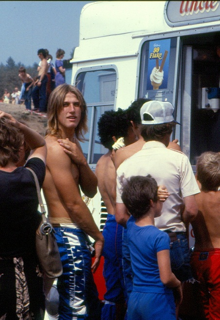
Andy Patterson waiting for an ice-cream
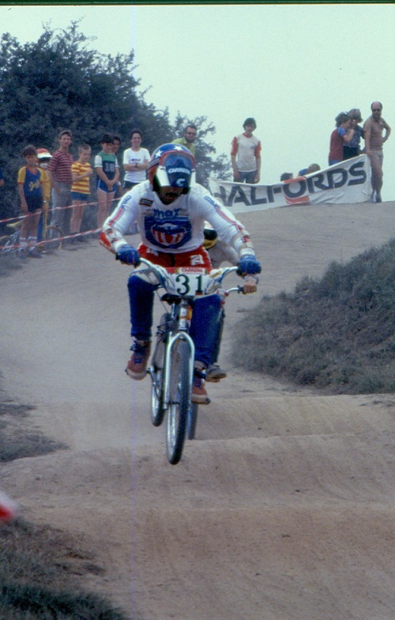
Charlie Litsky coming down the hill on his cruiser.
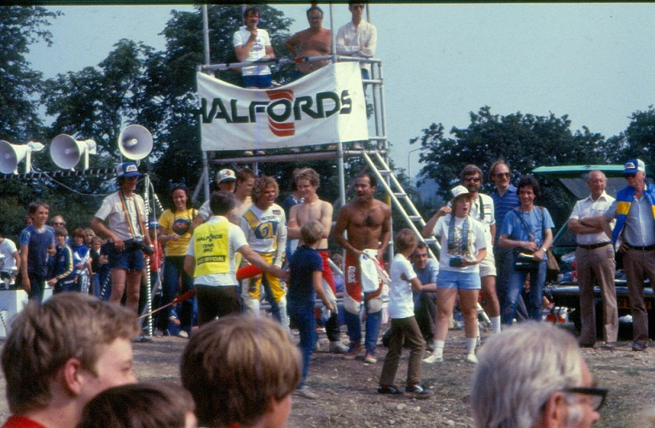
Greg Esser, Charlie Litsky and Kathy Schackel yelling, supporting their countrymen.
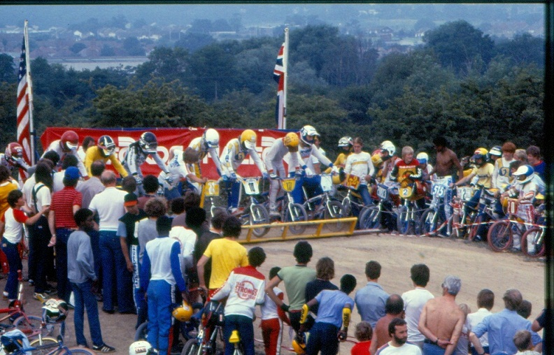
The starting gate full of USA professionals. This is what BMX in England looked like in the early 1980s.
Harry Leary signing his autograph for a young fan.
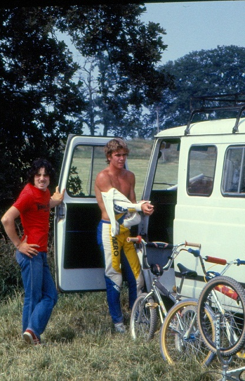
Tedesco and David Argyl at their van.
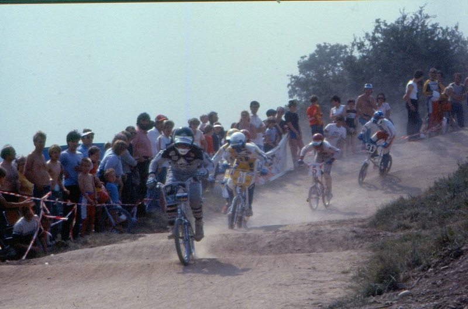
Harry Leary and Greg Esser charge down the final hill and into the home straight.
1999
The track begins to change
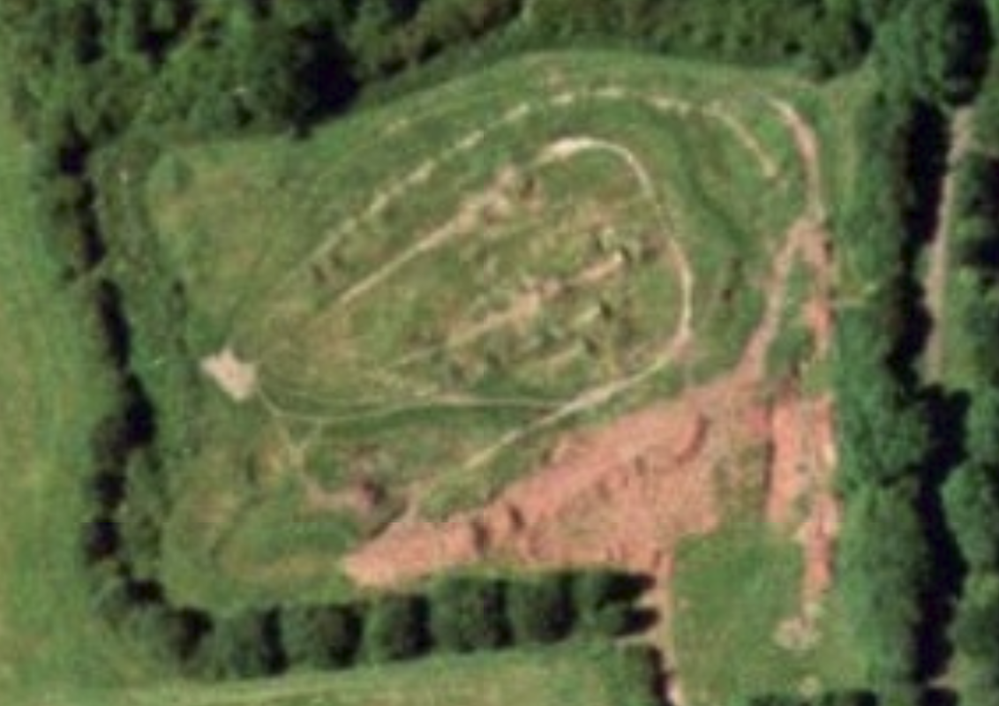
Sporting numerous modifications, the use of the track begins to drop into the 21st Century.
2004
Final form
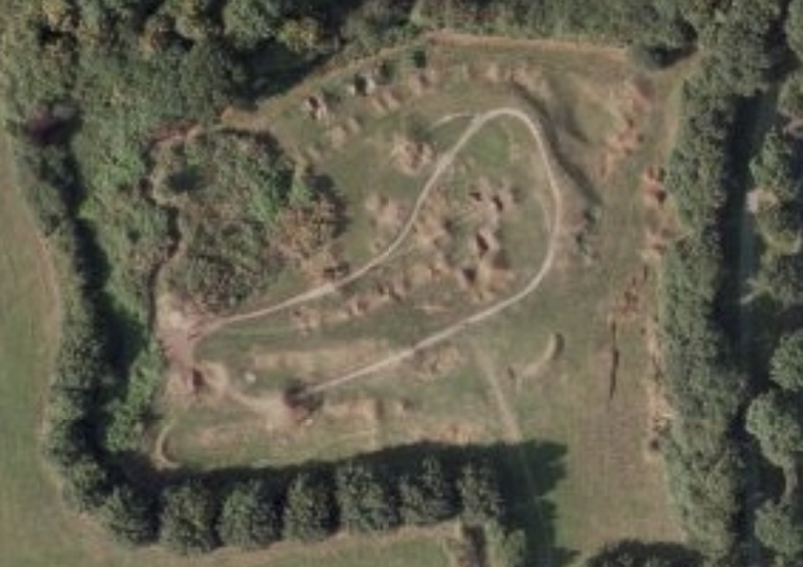
Only a basic loop can be seen as BMX loses popularity to mountain biking.
2010
Nature reclaims the space
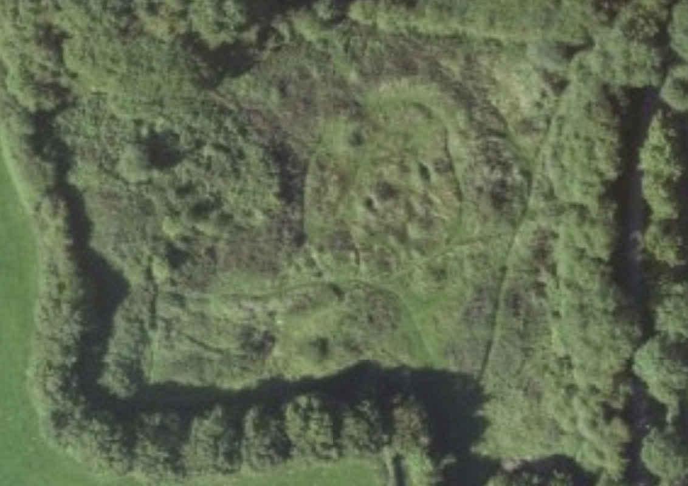
Now covered in grass and bushes, only those who know of the track can recognise it.
2016
Unknown to a generation
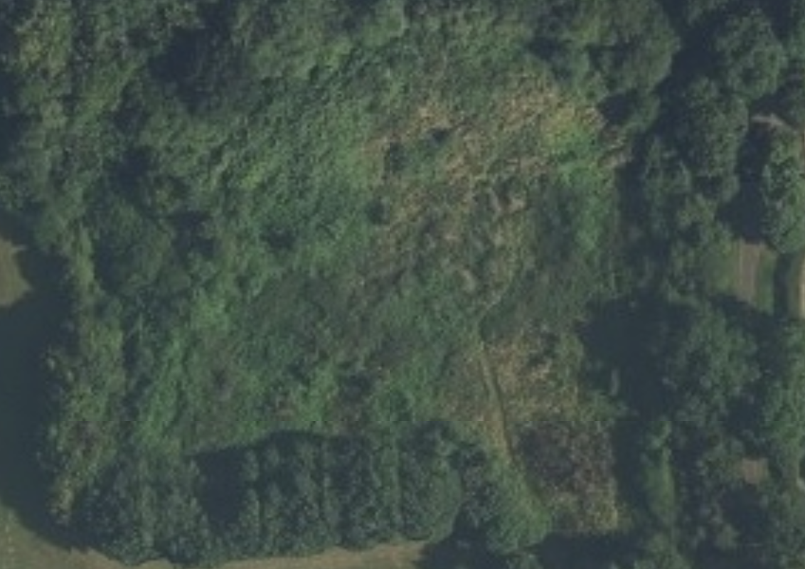
Completely hidden from sight, an abandoned plot lays dormant.
2017
New beginnings
The original starting block is uncovered as restoration plans begin.